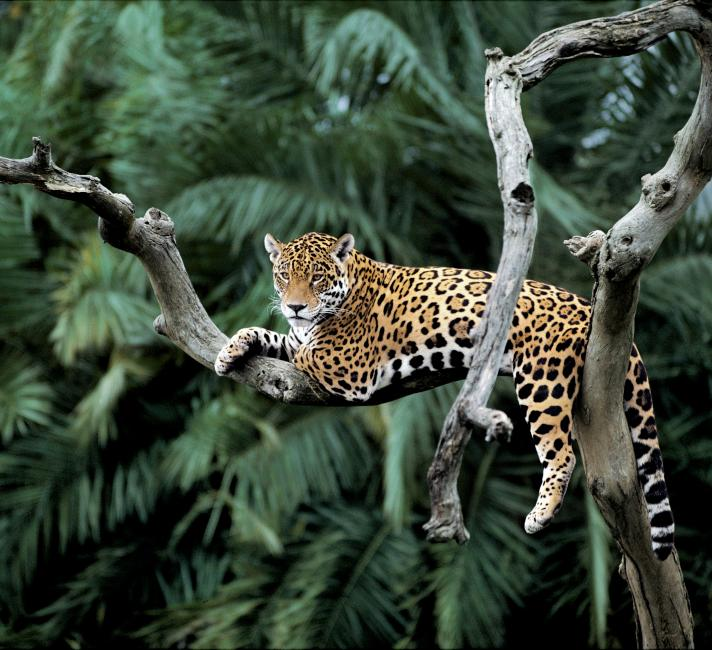

|  |
The jaguar (Panthera onca) is a large cat species and the only living member of the genus Panthera native to the Americas. With a body length of up to 1.85 m (6 ft 1 in) and a weight of up to 96 kg (212 lb), it is the largest cat species in the Americas and the third largest in the world. Its distinctively marked coat features pale yellow to tan colored fur covered by spots that transition to rosettes on the sides, although a melanistic black coat appears in some individuals. The jaguar's powerful bite allows it to pierce the carapaces of turtles and tortoises, and to employ an unusual killing method: it bites directly through the skull of mammalian prey between the ears to deliver a fatal blow to the brain.
The modern jaguar's ancestors probably entered the Americas from Eurasia during the Early Pleistocene via the land bridge that once spanned the Bering Strait. Today, the jaguar's range extends from extreme southern Arizona and New Mexico in the United States across Mexico and much of Central America, the Amazon rainforest and south to Paraguay and northern Argentina. It inhabits a variety of forested and open terrains, but its preferred habitat is tropical and subtropical moist broadleaf forest, wetlands and wooded regions. It is adept at swimming and is largely a solitary, opportunistic, stalk-and-ambush apex predator. As a keystone species, it plays an important role in stabilizing ecosystems and in regulating prey populations. |